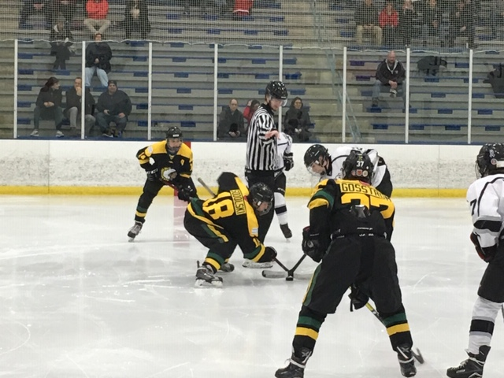

Family Life
My family consists of seven people. My dad's name
is Steve,
Webpage
Hello, my name is Nate Sodolski. I'm a Freshman at Lane Tech High School. I live with my dad, mom, two brothers, sister and my dog. I went to Bell School before attending Lane Tech. I play hockey as well as track as sports. I like to play video games, sleep, among other things. Some of my favorite fast-food resturants are Chipotle, Culvers, and Big Boy Gyros. In the future, I hope to attend Arizona State University, raise a family, and get a well paying job in the future and make a positive change in the world.
From a young age, I've always loved sports.
I played basketball, soccer, baseball, and football when I was little. I still follow
and watch those sports, but I've moved on from playing those sports. My main focus
is on Hockey and Track. I've always played hockey as a kid. I started skating when
I was 5 years old. I have played for club teams called the River
Dogs and the Stallions. Currently, I play for Lane's hockey team now. As for track,
I was always a fast runner, but never competed in track until recently. I won 5th in the city for
track in the 400 meter dash in 6th grade. I'm hoping to do Lane track this spring.
My family consists of seven people. My dad's name
is Steve,